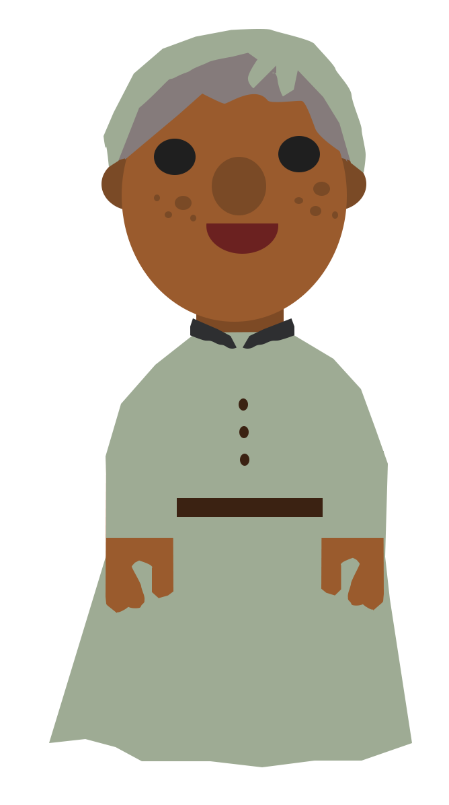
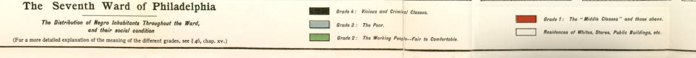
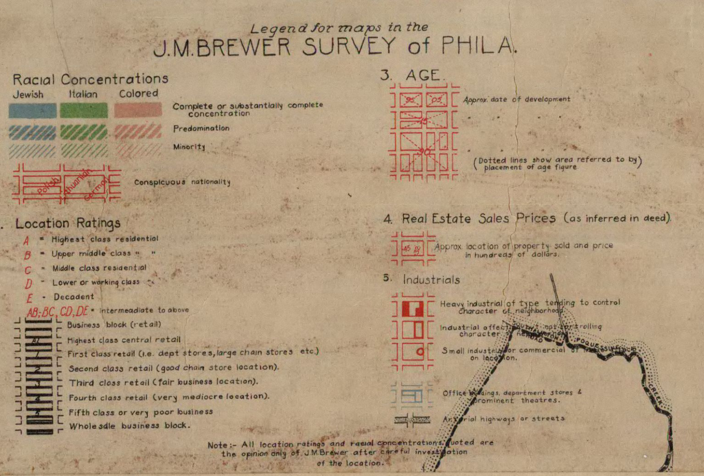

Subscribe to our mailing list to get the latest updates straight in your inbox.
Come on in!
Welcome to our home! 1880
The first Africans arrived in the Philadelphia area as enslaved people as early as 1639. [1] In 1684, the ship Isabella, brought 150 enslaved Africans directly into Philadelphia’s harbor. By the Revolutionary era, enslaved Africans accounted for about one-twelfth of Philadelphia’s total population. [2]
Name: Scott Brown Age: 32 Race: Black
Relation to Head of House: Self (Head) Marital Status: Married Occupation: Steward Birthplace: Missouri
Name: Hannah Brown Age: 24 Race: Black
Relation to Head of House: Wife Marital Status: Married Occupation: N/A Birthplace: Delaware
Name: Hettie Harris Age: 67 Race: Black
Relation to Head of House: N/A Marital Status: Widowed Occupation: N/A Birthplace: Delaware

Name: James Harris Age: 26 Race: Black
Relation to Head of House: N/A Marital Status: Married Occupation: Laborer Birthplace: Mississippi
Name: Julia Harris Age: 22 Race: Black
Relation to Head of House: N/A Marital Status: Single Occupation: N/A Birthplace: Delaware
Exit to neighborhood
Welcome to our home! 1900
Learning from the New York program, the Pittsburgh pilot would be targeted to address areas of high-need. Based on its lack of close access to a grocery store, the pilot would be located in Northerm Garfield. Should the pilot prove successful, it could be scaled up within the study area and to other neighborhoods in Pittsburgh.
This proposal is also relatively low-cost and could be deployed quickly in approximately one to three years. Most expenses would be administrative, but other costs incurred may result from subsidizing vendors, and creating a new system of licensing and enforcement.
.Learning from the New York program, the Pittsburgh pilot would be targeted to address areas of high-need. Based on its lack of close access to a grocery store, the pilot would be located in Northerm Garfield. Should the pilot prove successful, it could be scaled up within the study area and to other neighborhoods in Pittsburgh.
This proposal is also relatively low-cost and could be deployed quickly in approximately one to three years. Most expenses would be administrative, but other costs incurred may result from subsidizing vendors, and creating a new system of licensing and enforcement.
Name: Garrett H. Welsh Age: 49 Race: Black
Relation to Head of House: Self (Head) Marital Status: Married Occupation: Day Laborer Birthplace: Maryland
Name: Cordelia Welsh Age: 40 Race: Black
Relation to Head of House: Wife Marital Status: Married Occupation: N/A Birthplace: Pennsylvania
Name: Garrett Welsh Age: 5 Race: Black
Relation to Head of House: Son Marital Status: Single Occupation: N/A Birthplace: Pennsylvania
Name: Soloman Cole Age: 33 Race: Black
Relation to Head of House: Boarder Marital Status: Single Occupation: Day Laborer Birthplace: Pennsylvania
Welcome to our home! 1920
Learning from the New York program, the Pittsburgh pilot would be targeted to address areas of high-need. Based on its lack of close access to a grocery store, the pilot would be located in Northerm Garfield. Should the pilot prove successful, it could be scaled up within the study area and to other neighborhoods in Pittsburgh.
This proposal is also relatively low-cost and could be deployed quickly in approximately one to three years. Most expenses would be administrative, but other costs incurred may result from subsidizing vendors, and creating a new system of licensing and enforcement.
.Learning from the New York program, the Pittsburgh pilot would be targeted to address areas of high-need. Based on its lack of close access to a grocery store, the pilot would be located in Northerm Garfield. Should the pilot prove successful, it could be scaled up within the study area and to other neighborhoods in Pittsburgh.
This proposal is also relatively low-cost and could be deployed quickly in approximately one to three years. Most expenses would be administrative, but other costs incurred may result from subsidizing vendors, and creating a new system of licensing and enforcement.
Name: Joesph Abraham Age: 39 Race: White
Relation to Head of House: Self (Head) Marital Status: Married Occupation: Merchant (Retail Candy) Birthplace: Arabia Oas
Welcome to our home! 1940
Learning from the New York program, the Pittsburgh pilot would be targeted to address areas of high-need. Based on its lack of close access to a grocery store, the pilot would be located in Northerm Garfield. Should the pilot prove successful, it could be scaled up within the study area and to other neighborhoods in Pittsburgh.
This proposal is also relatively low-cost and could be deployed quickly in approximately one to three years. Most expenses would be administrative, but other costs incurred may result from subsidizing vendors, and creating a new system of licensing and enforcement.
.Learning from the New York program, the Pittsburgh pilot would be targeted to address areas of high-need. Based on its lack of close access to a grocery store, the pilot would be located in Northerm Garfield. Should the pilot prove successful, it could be scaled up within the study area and to other neighborhoods in Pittsburgh.
This proposal is also relatively low-cost and could be deployed quickly in approximately one to three years. Most expenses would be administrative, but other costs incurred may result from subsidizing vendors, and creating a new system of licensing and enforcement.
Name: Rose Little Age: 43 Race: Black
Relation to Head of House: Self (Head) Marital Status: Married Occupation: House Cleaner Birthplace: Georgia
Name: Frances Fulton Age: 28 Race: Black
Relation to Head of House: Daughter Marital Status: Married Occupation: Chambermaid Birthplace: Florida
Name: Louis Little Age: 13 Race: Black
Relation to Head of House: Nephew Marital Status: Single Occupation: Student Birthplace: Pennsylvania
Name: DeWitt Hopkins Age: 36 Race: Black
Relation to Head of House: Lodger Marital Status: Married Occupation: Spafteman Birthplace: Florida
Name: Beulah Hopkins Age: 29 Race: Black
Relation to Head of House: Lodger Marital Status: Married Occupation: Home (Housework) Birthplace: North Carolina
Exit to neighborhood
Welcome to our home! 1940
Learning from the New York program, the Pittsburgh pilot would be targeted to address areas of high-need. Based on its lack of close access to a grocery store, the pilot would be located in Northerm Garfield. Should the pilot prove successful, it could be scaled up within the study area and to other neighborhoods in Pittsburgh.
This proposal is also relatively low-cost and could be deployed quickly in approximately one to three years. Most expenses would be administrative, but other costs incurred may result from subsidizing vendors, and creating a new system of licensing and enforcement.
.Learning from the New York program, the Pittsburgh pilot would be targeted to address areas of high-need. Based on its lack of close access to a grocery store, the pilot would be located in Northerm Garfield. Should the pilot prove successful, it could be scaled up within the study area and to other neighborhoods in Pittsburgh.
This proposal is also relatively low-cost and could be deployed quickly in approximately one to three years. Most expenses would be administrative, but other costs incurred may result from subsidizing vendors, and creating a new system of licensing and enforcement.
Name: Benjamin Cohen Age: 57 Race: White
Relation to Head of House: Self (Head) Marital Status: Married Occupation: Master Jeweler Birthplace: Pennsylvania
Name: Deborah Cohen Age: 56 Race: White
Relation to Head of House: Wife Marital Status: Married Occupation: Jewelery Shop Keeper Birthplace: Poland
Name: Carole Cohen Age: 16 Race: White
Relation to Head of House: Daughter Marital Status: Single Occupation: Student Birthplace: Pennsylvania
Name: Eli Cohen Age: 25 Race: White
Relation to Head of House: Son Marital Status: Single Occupation: Master Jeweler Birthplace: Pennsylvania
Exit to neighborhood
Welcome to our home! 1920
Learning from the New York program, the Pittsburgh pilot would be targeted to address areas of high-need. Based on its lack of close access to a grocery store, the pilot would be located in Northerm Garfield. Should the pilot prove successful, it could be scaled up within the study area and to other neighborhoods in Pittsburgh.
This proposal is also relatively low-cost and could be deployed quickly in approximately one to three years. Most expenses would be administrative, but other costs incurred may result from subsidizing vendors, and creating a new system of licensing and enforcement.
.Learning from the New York program, the Pittsburgh pilot would be targeted to address areas of high-need. Based on its lack of close access to a grocery store, the pilot would be located in Northerm Garfield. Should the pilot prove successful, it could be scaled up within the study area and to other neighborhoods in Pittsburgh.
This proposal is also relatively low-cost and could be deployed quickly in approximately one to three years. Most expenses would be administrative, but other costs incurred may result from subsidizing vendors, and creating a new system of licensing and enforcement.
Name: Matthew Rapley Age: 54 Race: White
Relation to Head of House: Self (Head) Marital Status: Married Occupation: Attorney Birthplace: Pennsylvania
Name: Diana Rapley Age: 52 Race: White
Relation to Head of House: Wife Marital Status: Married Occupation: Attorney Birthplace: Pennsylvania
Return to 424 S 7th Street

Welcome to our home! 1940
Learning from the New York program, the Pittsburgh pilot would be targeted to address areas of high-need. Based on its lack of close access to a grocery store, the pilot would be located in Northerm Garfield. Should the pilot prove successful, it could be scaled up within the study area and to other neighborhoods in Pittsburgh.
This proposal is also relatively low-cost and could be deployed quickly in approximately one to three years. Most expenses would be administrative, but other costs incurred may result from subsidizing vendors, and creating a new system of licensing and enforcement.
.Learning from the New York program, the Pittsburgh pilot would be targeted to address areas of high-need. Based on its lack of close access to a grocery store, the pilot would be located in Northerm Garfield. Should the pilot prove successful, it could be scaled up within the study area and to other neighborhoods in Pittsburgh.
This proposal is also relatively low-cost and could be deployed quickly in approximately one to three years. Most expenses would be administrative, but other costs incurred may result from subsidizing vendors, and creating a new system of licensing and enforcement.
Return to 424 S 7th Street

Welcome to our home! 1940
Learning from the New York program, the Pittsburgh pilot would be targeted to address areas of high-need. Based on its lack of close access to a grocery store, the pilot would be located in Northerm Garfield. Should the pilot prove successful, it could be scaled up within the study area and to other neighborhoods in Pittsburgh.
This proposal is also relatively low-cost and could be deployed quickly in approximately one to three years. Most expenses would be administrative, but other costs incurred may result from subsidizing vendors, and creating a new system of licensing and enforcement.
.Learning from the New York program, the Pittsburgh pilot would be targeted to address areas of high-need. Based on its lack of close access to a grocery store, the pilot would be located in Northerm Garfield. Should the pilot prove successful, it could be scaled up within the study area and to other neighborhoods in Pittsburgh.
This proposal is also relatively low-cost and could be deployed quickly in approximately one to three years. Most expenses would be administrative, but other costs incurred may result from subsidizing vendors, and creating a new system of licensing and enforcement.
Return to 424 S 7th Street
Welcome to our home! 1940
Learning from the New York program, the Pittsburgh pilot would be targeted to address areas of high-need. Based on its lack of close access to a grocery store, the pilot would be located in Northerm Garfield. Should the pilot prove successful, it could be scaled up within the study area and to other neighborhoods in Pittsburgh.
This proposal is also relatively low-cost and could be deployed quickly in approximately one to three years. Most expenses would be administrative, but other costs incurred may result from subsidizing vendors, and creating a new system of licensing and enforcement.
.Learning from the New York program, the Pittsburgh pilot would be targeted to address areas of high-need. Based on its lack of close access to a grocery store, the pilot would be located in Northerm Garfield. Should the pilot prove successful, it could be scaled up within the study area and to other neighborhoods in Pittsburgh.
This proposal is also relatively low-cost and could be deployed quickly in approximately one to three years. Most expenses would be administrative, but other costs incurred may result from subsidizing vendors, and creating a new system of licensing and enforcement.